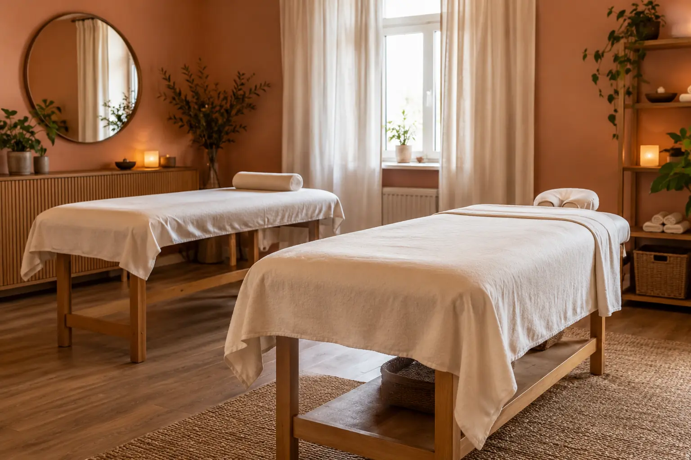

Nugaros ar viso kūno masažas: zonos, apimtis ir seanso trukmė
Autorius: Madbeauty redakcija · Numatyta 2026 m. gruodžio 4 d. 10:00 (Lietuvos laiku)
Kaip skiriasi nugaros, kaklo, pečių ir viso kūno masažo apimtis? Palyginkite įtrauktas zonas, darbo laiką ir viso vizito trukmę.

Rinkitės pagal tai, kurias kūno sritis norite įtraukti ir ar ieškote darbo su viena zona, ar platesnės apimties masažo. Vien pavadinimai „nugaros“ ir „viso kūno“ nepasako, kas tiksliai įeina į vizitą. Taip pat palyginkite nurodytą masažo laiką su visu rezervacijos laiku: tai gali būti skirtingi dalykai.
Pirmiausia susitarkite dėl zonų
„Nugaros masažas“ gali reikšti siauresnę arba platesnę sritį. Viename meniu tai gali būti tik nugara, kitame – nugara kartu su kaklu ir pečiais. Prieš rinkdamiesi išsiaiškinkite, ar aprašyme nurodytos konkrečios vietos ir ar pasirinkta zona apima abi kūno puses.
„Viso kūno“ pavadinimą taip pat verta išskaidyti į dalis. Patikrinkite, ar įtraukiamos rankos ir kojos, ar masažuojama priekinė kūno pusė, galva ar pėdos. Tai priklauso nuo konkretaus pasiūlymo. Iš anksto aptarkite, kurias sritis norite praleisti ir kaip bus užtikrinamas privatumas.
- Jei domina nugara, patikrinkite, ar kaklas ir pečiai įtraukti, ar nurodyti atskirai.
- Jei domina platesnis masažas, raskite aiškų įtrauktų ir neįtrauktų zonų sąrašą.
- Jei nenorite tam tikros srities ar pageidaujate kitokio spaudimo, aptarkite tai prieš vizitą.
Masažo laikas ir visas vizitas
Pasiūlyme nurodytas laikas gali reikšti masažo trukmę, o rezervacijai gali reikėti papildomo laiko pasiruošti, persirengti ar aptarti lūkesčius. Todėl palyginkite ne vien minutes: pasižiūrėkite, ką tiksliai apima vizitas ir ar nurodytas laikas skirtas pačiam masažui.
Pavyzdžiui, 2026 m. spalio 9 d. peržiūrėtame The Palm Alchemy meniu nugaros, kaklo ir pečių pasiūlymas buvo nurodytas kaip 35 minučių, o viso kūno variantai – kaip 60 arba 90 minučių. Tai vieno teikėjo, moterims skirto meniu pavyzdys, o ne visiems taikoma trukmė ar paslaugos standartas. Meniu gali keistis. The Palm Alchemy masažų apimtis.
Įsivaizduokite, kad norite skirti vizitą nugarai ir pečiams, o ne rankoms bei kojoms. Tada tinkamiau lyginti pasiūlymus pagal įvardytas zonas ir jų trukmę, o ne vien pagal „viso kūno“ žymą. Jei ieškote platesnės apimties, patikrinkite, ar jūsų pageidaujamos sritys iš tiesų įtrauktos.
Zonos nepasako masažo paskirties
Kūno srities pavadinimas nusako masažo apimtį, bet pats savaime neįrodo konkretaus gydomojo poveikio. NCCIH apžvalgoje aptariami skirtingi masažo tipai ir riboti, kai kuriais atvejais trumpalaikiai, tyrimų rezultatai. Todėl nevertinkite gydymo pažado vien iš zonos ar technikos pavadinimo. NCCIH informacija apie masažo terapiją.
Lietuvoje NVSC atskiria grožio paslaugas, įskaitant negydomąjį masažą, nuo asmens sveikatos priežiūros paslaugų. Jei pasiūlymas pristatomas kaip gydymas ar sveikatos paslauga, įvertinkite jo tikrąją paskirtį ir teikėjo kompetenciją; vien meniu pavadinimo tam nepakanka. NVSC apie grožio paslaugų veiklą ir NVSC apie grožio bei sveikatos paslaugų ribą.
Trumpas pasirinkimo patikrinimas
- Įvardykite norimas zonas ir tas, kurių nenorite įtraukti.
- Palyginkite, ar meniu nurodo masažo laiką, viso vizito trukmę, ar abu.
- Patikrinkite, kaip aprašomas spaudimas, privatumas ir galimybė vizito metu susitarti dėl komforto.
- Jei ieškote teikėjo, pirmiausia pasirinkite masažo kategoriją ar zonų grupę, tada – miestą. Vietos pasirinkimas savaime nepatvirtina, kad ten yra teikėjas, laisvas laikas ar galima rezervuoti.
Jei norite platesnio paslaugos paaiškinimo, peržiūrėkite ir „Masažo gidas: kūno ir veido paslaugos, eiga bei kompetencijos ribos“.
Procedūrų aprašai kataloge: Atskirų sričių masažai, Kaklo ir pečių masažas. Miestą ir realaus teikėjo pasiūlymą pasirinkite kataloge, kai tokia pasiūla pateikta.
Susiję gidai
Šaltiniai
- Prisilietimo harmonija · veido masažo variantai · www.treatwell.lt
- The Palm Alchemy · masažų apimtis · www.treatwell.lt
- NVSC · grožio veiklos apimtis · nvsc.lrv.lt
- NVSC · grožio ir sveikatos paslaugų riba · nvsc.lrv.lt
- NCCIH · masažo įrodymai ir rizikos · www.nccih.nih.gov